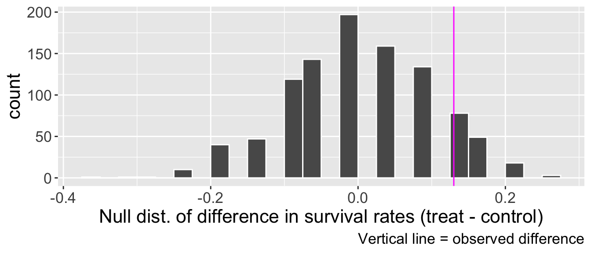

library(tidyverse)
library(openintro)Randomization for difference in proportions
We are using the cpr data from the openintro library. Define \(p_{T}\) as the proportion of treatment group who survived, \(p_{C}\) as the proportion of control group who survived. Our hypotheses were:
\(H_{0}\): \(p_{T} - p_{C} \leq 0\) versus \(H_{A}\): \(p_{T} - p_{C} > 0\)
Simulating null distribution
We will store some values as objects in R for reproducibility.
# get the observed outcomes as a vector
outcomes <- cpr$outcome
# store number of treatment and control observations from original sample
n_t <- sum(cpr$group == "treatment")
n_t[1] 40n_c <- sum(cpr$group == "control")
n_c[1] 50# get observed difference in proportions
# option 1
obs_diff <- cpr |>
group_by(group) |>
summarise(p = mean(outcome == "survived")) |>
pull(p) |>
diff() # defaults to taking second value minus first
# option 2
cond_probs <- cpr |>
group_by(group) |>
summarise(p = mean(outcome == "survived")) |>
pull(p)
obs_dff <- cond_probs[2] - cond_probs[1]
obs_diff[1] 0.13Now we will perform the randomization test!
If you only pass in a vector as the argument to sample() without specifying the size of the sample, you will get a shuffled version of the vector back as output. That is, the function will resample without replacement from the vector, with the size being the same size as the vector.
set.seed(310)
B <- 1000
diff_sims <- rep(NA , B)
for(b in 1:B){
# shuffle the outcomes. See comment for more details.
shuffled <- sample(outcomes)
# deal out first n_t cards to treatment group
treat_sim <- shuffled[1:n_t]
# deal out remaining n_c cards to control group
control_sim <- shuffled[-c(1:n_t)]
# calculate proportion of survival in each group
p_t_sim <- sum(treat_sim == "survived")/n_t
p_c_sim <- sum(control_sim == "survived")/n_c
# calculate difference and store.
# I will do treatment - control because it mirrors how obs_diff is calculated
diff_sims[b] <- p_t_sim - p_c_sim
}Visualize null distribution

Obtain p-value
We need to find how many simulated null differences in proportions were greater than or equal to our observed difference of obs_diff = 0.13.
p_val <- sum(diff_sims >= obs_diff) / B
p_val[1] 0.148